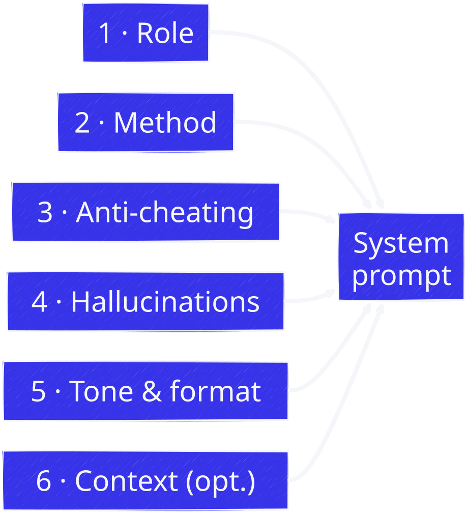

4 Designing an AI tutor
Working page for block 2 (Track A). Track B students attend the workshop as observers: they observe the design process without having to reproduce it. The ideas on this page are also useful to Track B students to understand what the other group does during the reciprocal observation.
4.1 Why configure the tutor?
A “raw” chatbot is often a poor teacher: it gives answers directly, which shortcuts the construction of understanding, and it hallucinates, producing false claims with confidence.
In the session 2 demo, the first part runs the model in the editor profile “Minimal”: no tools attached, so nothing that searches or edits your files, and no tutor persona. The profile’s own system prompt is still there; what is missing is the persona you will write. This profile answers directly and states false things with confidence. The rest of the demo wraps the same model in a misconfigured prompt and in a Socratic prompt.
A good Socratic tutor, by contrast:
- does not give the answer: it questions and guides;
- supports (scaffolding): it breaks down, rephrases, gives a hint at the right moment;
- preserves your agency: you do the reasoning, it does not reason in your place;
- adapts: when you show an error, it adjusts its scaffolding.
To configure this behavior, you must understand the material as well as the pedagogy: that is the learning by teaching principle. If you cannot tell a good explanation from a bad one, you will not be able to correct your tutor.
4.2 The anatomy of a system prompt
A system prompt is the text that sets the chatbot’s behavior. It is built from blocks:
Role: who the tutor is, for what audience. E.g.: > “You are a Socratic Python programming tutor for a master’s student in applied computer > science. Your goal is to help them understand asynchronous programming concepts, never > to do the work for them.”
Method: how it teaches. E.g.: > “You progress with short questions. You never give a solution directly: you guide the > student step by step. When they make a mistake, you do not give the correction: you > ask a question that makes them reflect on their error.”
Anti-cheating rules: what is forbidden. E.g.: > “You never provide the complete code of an exercise. You can give a skeleton, a hint, > or point to the documentation. You politely refuse if the student insists.”
Handling hallucinations: how it manages uncertainty. E.g.: > “If you are not sure of an answer, say so explicitly and offer to check the > documentation. Clearly flag the points of the documentation that you are inventing.”
Tone and format: how it expresses itself. E.g.: > “You answer in French, concisely and encouragingly. You check understanding before > moving on.”
Context (optional): the material to teach. You can provide an excerpt from the course material, a chapter outline, or precise learning objectives.

4.3 Where the tutor lives in practice: your local AGENTS.md
The demo builds the tutor through a custom harness. In Zed you do not need one. A profile decides the toolset and carries its own built-in system prompt: “Minimal”, “Ask” and “Write” each have one, none is prompt-less. The part you write is the persona, the blocks above. You hand it to Zed by writing it into an AGENTS.md file at the root of the module folder you want tutored, or into the global file in ~/.config/zed/AGENTS.md. Zed merges that file into the system prompt of every session opened in that project, on top of the profile’s own instructions. Put the persona where you want the tutor active: in a module folder for a dedicated tutor, in the global file for a default tutor everywhere. The “Ask” profile then acts as your test bench: read-only, it searches your notes and answers without ever editing, and your persona text is live in it, with no harness involved. The global-file setup and its output-bounding rules are covered in appendix-agent-tips.qmd.
4.4 The iteration process
A system prompt is never “finished”. Work loop:
- Write a v1 (blocks above).
- Test on typical module exercises: does the tutor give the right amount of help? Does it resist the request for a solution? Does it spot an error?
- Observe the conversations: where is the tutor too directive? too vague? What did it invent?
- Iterate: rephrase, constrain, add an example dialogue to imitate or to avoid in the prompt.
- Record: keep track of the prompt versions and the reason for each change. This is valuable material for your reflective report.
Logically, the prompt can even start with “do not open the topic with…”. In practice, the iterations are won in the details: one counter-example dialogue is often worth more than ten abstract rules.
4.5 Detecting a false (or harmful) answer
- Cross-check sources: compare the tutor’s answer with the official documentation (e.g.,
docs.python.org), other resources, or a small execution test. - Test the code: never copy code without understanding it or running it.
- Ask for reasons: a good tutor must be able to justify itself; if it contradicts itself or digs its heels in, you have likely detected the error.
- Document: every false answer detected and corrected goes into your logbook. That is one of the goals of the module.
4.6 Typical exercise (block 2)
- Choose a simple concept from the module (e.g., the difference between
threadandprocess, or what acoroutineis). - Write a v1 of the system prompt in 5 blocks (role, method, anti-cheating, hallucinations, tone).
- Test it on 3 questions: “give me the answer” (the tutor must refuse), “correct my code” (it must make you think), “explain this concept” (it must support without giving everything).
- Note 2 observed flaws and propose 2 concrete changes to the prompt.
- Keep the v1 of the prompt: it will be attached to your learning plan and discussed at the validation (session 5).
4.7 Self-assessment grid for a prompt
4.8 Further reading
The research behind the workshop, with working examples of each technique (persona, guardrails against answer leakage, Pólya’s four phases, few-shot exemplars, and a leak-detecting judge), is gathered on the socratic-prompting.qmd page.